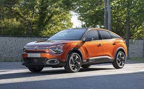
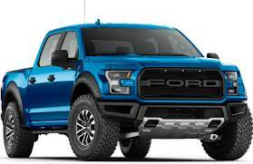
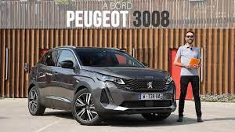

Les Porsche que Sixt offre à la location font partie de notre gamme Super Cars, qui est disponible dans certaines agences sélectionnées en France, ainsi qu’à l’étranger. Elle ne compte que des véhicules sportifs de grand luxe. Notre offre location de Porsche en France propose la Panamera, la Porsche 911 cabriolet et la Porsche Cayenne. Nos locations de véhicules de sport et de grand luxe, comme nos Porsche, sont disponibles à Paris (aéroport Roissy CDG et Orly, Boulogne-Billancourt et Paris centre), Toulon, Metz, Cannes, Saint-Tropez, Nice et Montereau. Pour consulter immédiatement la disponibilité de nos Porsche 911, Porsche Cayenne et Porsche Panamera de location dans ces agences ainsi que nos tarifs attractifs, consultez notre page location de Porsche Super Cars
les détails de location

Depuis quelques années, Citroën est parvenu à redresser son image en offrant des véhicules au design attractif, sans se départir de son confort légendaire, qui a fait la réputation du constructeur français. Vous avez de la route à faire pour rejoindre votre destination de vacances ? Une location de Citroën ressemble à un choix parfait, comme la C5. Vous êtes plutôt à la recherche d'une location de DS3, ce véhicule compact tellement élégant et confortable ? Nous disposons actuellement de DS3 à louer dans certaines agences en France, mais aussi à l'étranger. Nous comptons également dans notre gamme « location de voiture » des Citroën C3, C4, C5, DS5. Pour les groupes, notre flotte de minibus à louer comporte le Citroën Jumpy 9 places, un véhicule de location idéal pour les familles très nombreuses et les groupes.
Si la gamme DS remporte un franc succès du côté de chez Citroën, le constructeur français dispose également d'une solide réputation sur le marché des véhicules pour professionnels. Il n'est donc pas étonnant que Sixt, dans son offre location d'utilitaires, compte de nombreux véhicules Citroën à louer, aussi bien pour les particuliers que pour les professionnels. Que ce soit pour un déménagement, transporter des achats volumineux (frigo américain, meubles, etc.) ou livrer un client, Sixt dispose de la location d'utilitaire Citroën que vous cherchez, comme le Citroën Berlingo ou un fourgon de type Jumper. De nombreuses agences Sixt à travers la France proposent la location d'utilitaire dans leur gamme de services.

les details de location
Le site CARIGAMI, en partenariat avec Ford location, vous offre une large gamme de véhicules, pour la ville, pour la route, pour le plaisir ou pour l'utilité. Vous pourrez disposer d'une voiture Ford location depuis l'une de nos 40 000 agences partenaires réparties dans 170 pays, afin de vous déplacer librement où bon vous semble. Outre les avis clients concernant Ford location de voiture qui vous apporteront des expériences intéressantes capables de vous aider dans votre sélection, CARIGAMI vous fait bénéficier de son infoline qui vous permettra de valider votre choix selon vos contraintes. Enfin, en cas d'aléas, une annulation sans pénalité est possible si elle intervient jusqu'à 24 heures avant la date de prise en charge du véhicule

les détails de location
Location de voiture 3008
Si vous êtes à la recherche d’une location de Peugeot 3008 en Corse, au tunis, vous pouvez immédiatement demander un devis en ligne sur tripncar et sélectionner votre SUV 3008 aux meilleurs conditions et a des tari avantageux. Si vous souhaitez louer un SUV Peugeot 3008 n’hésitez a opter pour Tripncar le spécialiste de location de voiture en France et partout au Monde.